Overview
This project builds a Monte Carlo path tracer from camera rays up to diffuse global illumination. The pipeline generates rays through pixels, finds the nearest surface using a bounding volume hierarchy (BVH), and estimates the light returning toward the camera. Direct lighting samples the light sources, while indirect lighting follows additional surface interactions. Adaptive sampling then spends more work on pixels whose estimates are still uncertain.
The most useful distinction in these experiments is between visibility, transport, and sampling noise. Correct intersections determine which surface is visible; additional bounces change the illumination itself; additional samples make that estimate less noisy. A BVH reduces the cost of finding intersections without intentionally changing the image. The results below separate these changes so that each stage can be evaluated on its own.
Ray generation & scene intersection
For each pixel, raytrace_pixel draws random offsets from the unit square, adds them to the pixel coordinates, and divides by the image width and height. Camera::generate_ray maps these normalized coordinates onto the sensor plane at \(z=-1\). Its horizontal and vertical extents are \(\tan(\mathrm{hFov}/2)\) and \(\tan(\mathrm{vFov}/2)\), with the field-of-view angles converted from degrees. The camera-to-world rotation transforms this direction, which is normalized; the ray origin is the world-space camera position. The near and far clip values initialize the valid ray interval. Averaging the returned RGB radiance over the samples gives the pixel value.
Triangle intersection uses the Möller–Trumbore construction. With edges \(\mathbf e_1=\mathbf p_2-\mathbf p_1\) and \(\mathbf e_2=\mathbf p_3-\mathbf p_1\), I solve \(\mathbf o+t\mathbf d=\mathbf p_1+u\mathbf e_1+v\mathbf e_2\) using cross products and dot products. A zero determinant rejects a parallel ray or degenerate triangle. A hit must have \(u\geq0,\quad v\geq0,\quad u+v\leq1\), which keeps it inside the triangle. Its distance t must also lie in the ray’s current interval. The normal is the normalized interpolation \((1-u-v)\mathbf n_1+u\mathbf n_2+v\mathbf n_3\), so the shading varies smoothly across a mesh rather than staying constant on each face.
Sphere intersection substitutes the ray equation into the sphere equation and solves a quadratic. A negative discriminant means a miss. Of the two ordered roots, the implementation selects the nearest one inside the valid interval; this also handles a ray starting inside a sphere or a near root excluded by clipping. The sphere normal points from the center to the hit point. Both primitive types shorten max_t on a successful hit and record the distance, normal, primitive, and material. Later tests therefore cannot overwrite the result with a farther hit.
These normal-shaded images use \(\mathrm{RGB}=0.5\mathbf n+0.5\). The flat box walls have nearly constant colors, whereas the spheres and banana show continuous color changes as their normals vary. This visualization tests the geometry before lighting is introduced. The images were rendered at 800 × 600 with 16 camera samples per pixel.
Bounding volume hierarchy
The BVH constructor first unions the primitive bounding boxes and separately bounds their centroids. If a range contains at most four primitives, it becomes a leaf holding that iterator range. Otherwise, the constructor chooses the axis with the largest centroid extent and uses std::nth_element to split at the median centroid. Recursing on the two halves produces balanced children. Because the split is by index after partitioning, both children are nonempty even when all centroids coincide; the recursion still makes progress.
Bounding-box intersection uses the slab method. Each axis supplies an entry and exit distance, and intersecting the three intervals gives the range where the ray is inside the box. Negative ray directions swap the two endpoints. A direction component of zero is handled explicitly: the origin must already lie within that slab. This avoids division by zero on a box face. Traversal clips the box interval against the ray’s current minimum and maximum distances, including rays that begin inside a box.
At a leaf, only its own primitives are tested. The any-hit query returns immediately after finding an intersection, which is useful for shadow rays. The closest-hit query visits the child with the earlier box entry first and then evaluates the other child against the shortened ray interval. It does not stop after an arbitrary hit. This preserves the nearest visible surface while pruning work that can no longer affect it.
The following controlled measurements use normal shading, 320 × 240 resolution, one camera sample per pixel, and one thread on the same machine. They report the renderer’s render time, not scene-loading or BVH-construction time. The brute-force executable tests every primitive; the accelerated executable uses the implemented BVH. These are individual measurements, so small timing differences should not be interpreted as precise benchmarks.
| Scene | Without BVH (s) | With BVH (s) | Speedup | Primitive tests/ray, before → after |
|---|---|---|---|---|
| Cow | 1.0505 | 0.0225 | 46.7× | 5856 → 4.44 |
| Banana | 0.3684 | 0.0310 | 11.9× | 2458 → 8.46 |
| Beetle | 1.1646 | 0.0348 | 33.5× | 7558 → 7.84 |
The BVH reduces thousands of primitive tests per ray to roughly four to nine in these scenes. Cow improves by about 46.7×, banana by 11.9×, and beetle by 33.5×. The gain is not determined by primitive count alone: the arrangement and overlap of bounding boxes affect how many nodes survive each ray’s visibility tests. Banana requires more primitive tests per ray after acceleration than cow despite containing fewer primitives. Tree traversal also adds overhead, so the reduction in primitive-test count is larger than the measured time speedup.
Direct illumination
The diffuse material evaluates to \(\rho/\pi\). Zero-bounce radiance is the emission of the surface seen directly by the camera. One-bounce radiance estimates incoming light reflected at the first surface, with a local coordinate frame whose \(z\) axis is the surface normal. The local incoming direction’s z component supplies the cosine factor.
For uniform hemisphere sampling, the estimator draws directions with probability density \(1/(2\pi)\). Each sampled direction is transformed into world space and traced from the hit point with a small positive minimum distance to avoid a self-intersection. If its first intersection emits light, that emission contributes \(f_r L_i\cos\theta\) divided by the sampling density. The result is averaged over the number of directions. Samples that hit a nonemissive surface contribute zero because this estimator is only computing direct illumination.
For light importance sampling, the estimator instead visits each light and samples a direction toward it, obtaining the radiance, distance, and directional PDF from sample_L. Directions below the surface are discarded. A shadow ray ends just before the light and contributes only when no geometry blocks it. Each visible contribution is \(f_r L_i\cos\theta/p(\omega_i)\), averaged for that light and then summed across lights. Delta lights need only one sample; area lights use the configured light-sample count. This method can handle point lights, which have zero probability of being hit by a continuously sampled hemisphere direction. Both comparison pairs below use 480 × 360 resolution and fixed camera sampling.
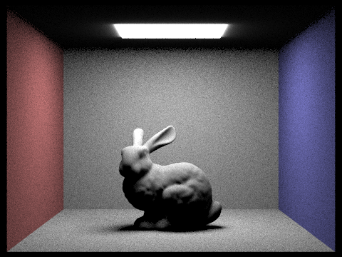
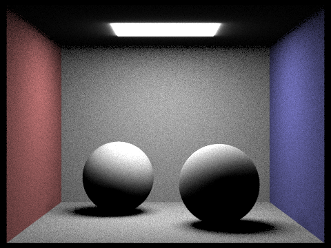
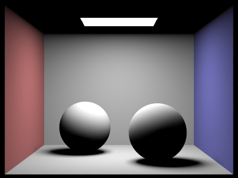
Both scene pairs estimate direct light, but the hemisphere result is visibly noisier, especially on the walls and floor. Many hemisphere directions miss the relatively small ceiling light, so a small number of large contributions dominate the estimate. Sampling the light directly concentrates work on directions that can contribute and leaves visibility as the main rejection test. Both methods leave the bunny’s underside dark because neither includes indirect illumination. The different glow close to the ceiling light also reflects the starter code’s directional area-light model versus the emission returned by a geometry hit.
The next comparison fixes the camera rate at one sample per pixel and varies only the area-light sample count. All four images use light importance sampling and one-bounce lighting.
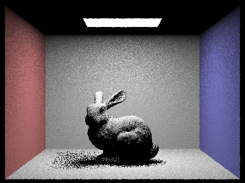
At one light sample the shadow boundary and nearby floor are strongly speckled. Four and sixteen samples make the penumbra progressively more continuous; at sixty-four, the shadow is much smoother. More light samples improve the visibility integral for the area light, but do not replace camera supersampling: the silhouette can still show aliasing because every pixel has only one camera sample.
Global illumination
Indirect illumination recursively follows a direction sampled from the surface BSDF. The diffuse sampler chooses a cosine-weighted hemisphere direction, returns its PDF, and evaluates \(\rho/\pi\). After transforming the direction into world space, the new ray starts at the hit point with an epsilon minimum distance and one fewer remaining bounce. A successful secondary intersection returns recursively estimated radiance, multiplied by the current BSDF and \(\cos\theta/p(\omega_i)\). With cosine-weighted diffuse sampling, these factors simplify to the reflectance, although the implementation retains the general weighted expression.
Here \(q\) is the continuation probability: 1 for the first indirect bounce and 0.65 for later bounces when Russian roulette is enabled.
Camera rays start with the requested maximum depth. At depth zero only visible emission is returned. In accumulated mode, each eligible vertex adds its direct-light estimate; in individual-bounce mode, that estimate is added only when the remaining depth is one. Secondary emission is not added again, because light sampling at the preceding vertex already accounts for that direct-light path. This avoids double-counting energy.
Russian roulette always allows the first indirect bounce when the maximum depth exceeds one. At later vertices, a path continues with probability 0.65. Surviving recursive contributions are divided by 0.65 to compensate for terminated paths. Direct lighting already evaluated at the current vertex is retained even if continuation stops. Roulette preserves the expected contribution of paths within the depth limit; a finite maximum depth still truncates longer paths.
The following global-illumination results use 1024 camera samples per pixel, four samples per light, and a maximum depth of five with accumulated bounces and Russian roulette. The Part 4 experiments use fixed camera sample counts, before adaptive sampling was introduced.
Compared with direct lighting, additional bounces brighten surfaces that cannot see the ceiling light and introduce color bleeding from the walls. The bunny’s underside and the spheres’ shadowed sides now retain visible shape. Light reflected from the red wall warms nearby surfaces, while the blue wall adds a cooler tint on the opposite side.
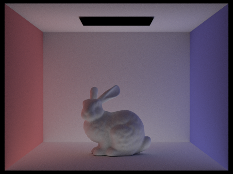
The direct image has a bright top surface and a much darker underside. The indirect-only image excludes the visible ceiling emitter and the primary direct-light term, but still illuminates the bunny and floor through other surfaces. It is dimmer overall and contains the wall-color transfer that is missing from direct lighting. These displayed PNGs are tone-mapped, so adding their displayed pixel values is not the same as adding their linear radiance estimates.
For the next six pairs, Russian roulette is disabled to isolate the finite-depth experiment. Each image uses 1024 samples per pixel and four samples per light. The left column contains only the indicated bounce; the right column accumulates emission and all bounces through that depth.
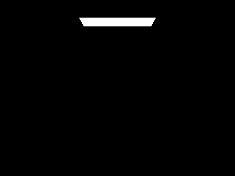
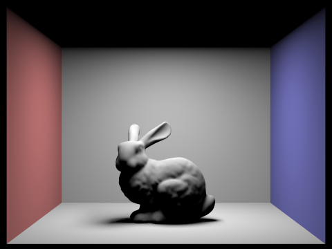
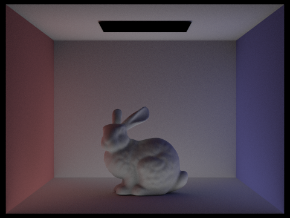
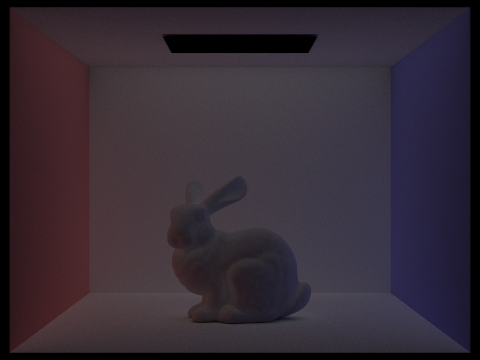
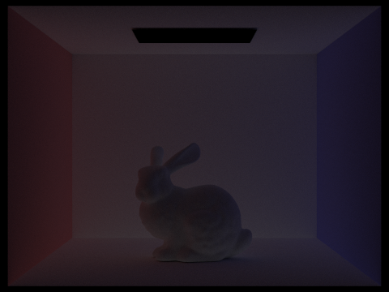
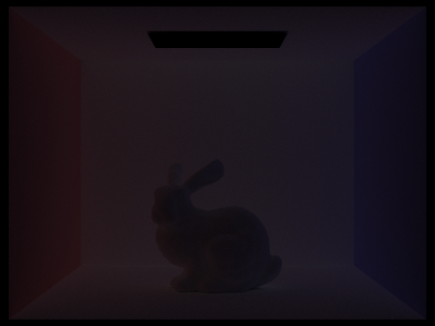
Bounce zero isolates the ceiling emitter. Bounce one supplies direct light, while bounce two introduces the most obvious indirect contribution: the floor and walls return light to the bunny, revealing its underside and tinting its sides. Bounce three is dimmer and more broadly distributed, filling in light after another surface reflection. The higher individual-bounce images continue to lose energy because diffuse surfaces absorb part of the incident light. In the accumulated column, the large change from one to two bounces is followed by increasingly subtle changes. Basic direct-light rasterization does not produce this interreflection automatically; it would need an additional global-illumination technique or precomputed approximation to reproduce the color bleeding and illumination of hidden surfaces.
The next series enables Russian roulette and accumulates bounces, with 1024 samples per pixel and four samples per light. The depth-100 render permits much longer paths, but roulette stops most before they reach that cap.
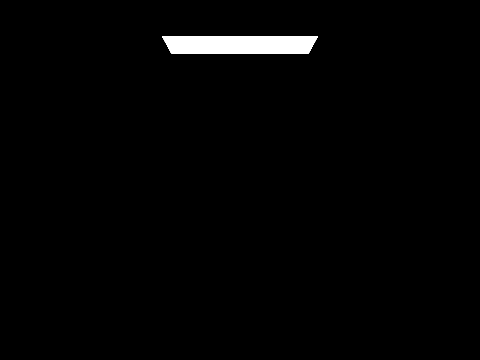
The first indirect bounces produce the largest visual improvement. Depth 100 adds the tail of higher-order illumination, but does not make the scene arbitrarily bright because each reflection attenuates energy. At zero and one bounce, roulette has no recursive continuation to decide; these images are useful controls. The high-depth image remains an estimate with finite sampling noise, rather than a noise-free reference.
Finally, this series holds the light-sample count at four and the maximum depth at five, with accumulated bounces and roulette. Only the number of camera samples changes.
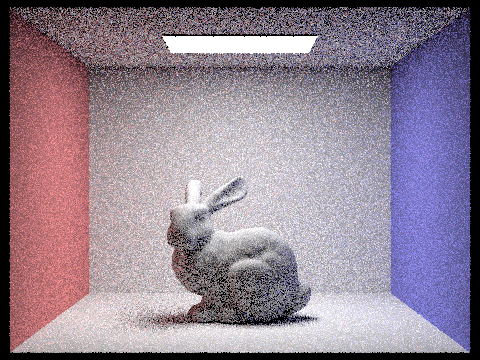
At one to eight samples, individual random paths create strong grain and occasional bright contributions. Sixteen and sixty-four samples reveal the scene more consistently, while 1024 gives much smoother wall gradients and soft shadows. The geometry and transport model do not change across this series. Averaging more independent samples reduces the standard error approximately with the inverse square root of the sample count, so large quality improvements require substantial additional work.
Adaptive sampling
Adaptive sampling uses the observed variation in each pixel to decide whether another batch of camera rays is needed. The implementation accumulates RGB radiance and tracks the mean and variance of each sample’s luminance using Welford’s online update. This computes the sample variance without storing every sample and avoids subtracting two large, nearly equal sums for bright, nearly constant pixels.
After each complete batch, provided at least two samples have been collected, the code computes \(I=1.96\sqrt{s^2/n}\). It stops when \(I\leq\texttt{maxTolerance}\,\mu\), or when the configured maximum sample count is reached. The RGB sum is divided by the actual count, and that same count is written into sampleCountBuffer. The rate image visualizes actual count divided by the maximum: blue means relatively few samples, green is intermediate, and red is near the limit. A batch size of zero disables early termination for fixed-sample experiments.
Both scenes below use a maximum of 2048 camera samples per pixel, one sample per light, maximum depth five, and accumulated illumination with Russian roulette. The convergence test runs every 64 samples with a relative tolerance of 0.05. The PNGs are the renderer’s original 480 × 360 outputs.
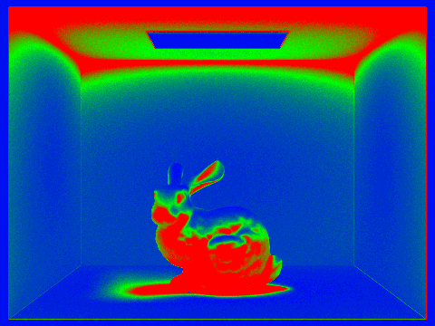
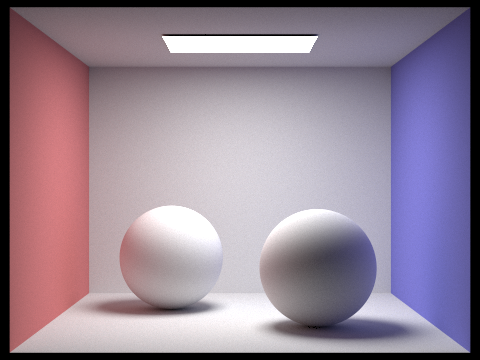
The bunny’s rate map assigns many samples to its shadowed body, contact shadow, and the upper wall region, while broad wall regions and the directly visible emitter converge earlier. Those difficult areas contain more variable visibility or weaker indirect illumination, so achieving a small relative error requires more samples. The spheres likewise concentrate work on shadow transitions and darker curved surfaces. The final images retain smooth broad regions without forcing every pixel to use the maximum budget. The stopping rule is a practical variance-based estimate, not a guarantee: pixels can still be noisy at the cap, and a batch may miss rare high-energy paths.